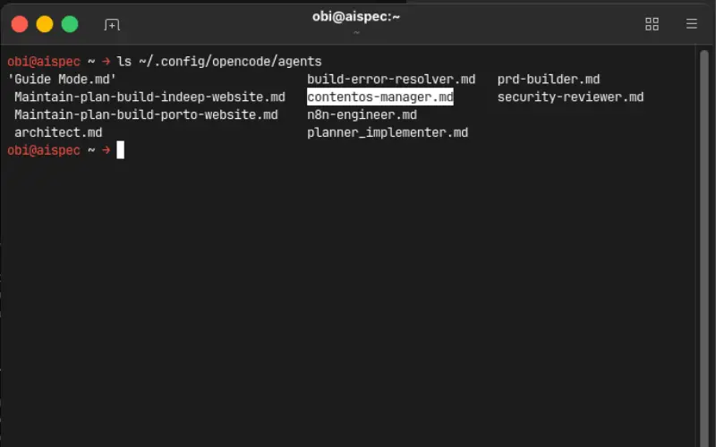
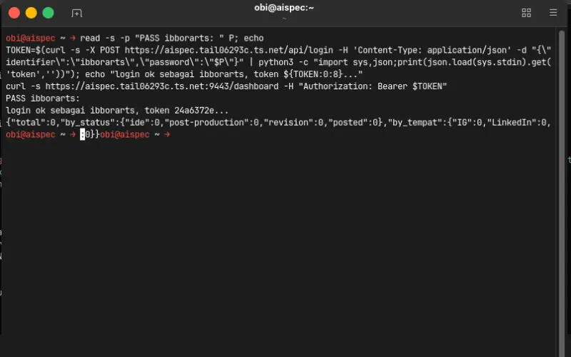
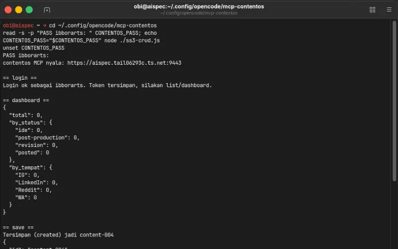
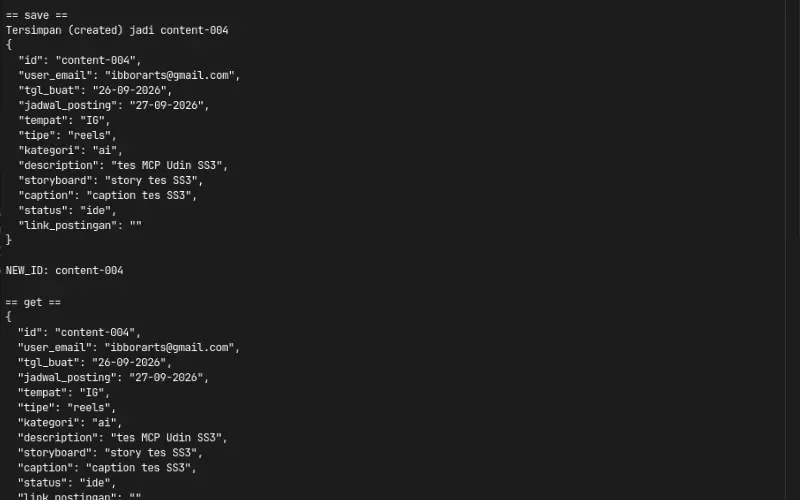
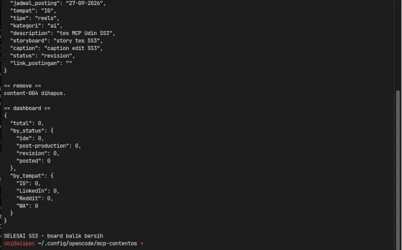

Experiment 015
Live Node MCP SDK · opencode primary agent · Shared AuthLetting the LLM Into My Own Web App Through an Internal MCP, No Manual Entry.
Can a self built web app let the LLM in through an internal MCP so ideas land without manual entry?
Muse Spark 1.3 via opencode zen · opencode tools · 7 verified captures · 0 new servers · 26 Sep 2026
Source Code
The translator is public. Prove it yourself.
You get the full MCP server plus the agent definition. One small translator file, six honest tools, one primary agent. No secrets inside. The tracker it writes to is the same live ContentOS from EXP 014.
github.com/robbyaliasaakbar/opencode-agents/tree/main/mcp-contentos
github.com/robbyaliasaakbar/robbyaliasaakbar.github.io/tree/main/contentOS
System Requirements
MCP Server
server.js 182 lines, 6 tools, stdio
Agent
contentos-manager, primary, temp 0.7
Auth API
Funnel :443 to :7002, token in memory
Data API
Funnel :9443 to :7010 Node Express
Engine
Node 22, SDK 1.30.1, zod
Model
Muse Spark 1.3 via opencode zen
Dev Tools
opencode session tools
New Servers
Zero, reuse both funnels
First experiment developed with a hosted model instead of the local coder. The translator runs on the laptop config, the tracker data still lives on the home PC behind the same two encrypted funnels as EXP 014.
Screenshots
Terminal Receipts in Order Plus the Live Board
Seven captures in strict order. Shots 3, 4, and 5 are one continuous MCP run split for uniform size, read them top to bottom as crud1, crud2, crud3. Board shots show the public admin dummy rows from EXP 014, while MCP receipts use the isolated test account, written openly below.
Agent Registered Globally
agent-list.webp
Base Door Open Plus Empty Start
login.webp
MCP Run Part 1 of 3 - Login Plus Create
mcp-crud1.webp
MCP Run Part 2 of 3 - Read Back
mcp-crud2.webp
MCP Run Part 3 of 3 - Edit Plus Delete Plus Clean
mcp-crud3.webp
Live Board Light Plus Dark
dashboard-light-app.webp / dashboard-dark-app.webp

Honest note: board shots show the public admin dummy rows from EXP 014. MCP receipts above use the isolated test account ibborarts with total 0. Two accounts, written openly, no mixing.
Live Demo
No New Web App, Only Receipts
The tracker is still /contentOS/ from EXP 014. This experiment proves an AI scribe can login, list, save, edit, and remove through 6 local tools. Try the tracker live, then compare with the terminal shots above.
Live tracker, home PC backend. If the computer or tunnel doors are closed, tools fail with an honest message, which is expected and not broken. The captures above document the entire MCP run. Test rows were created and deleted on the same day, the board is clean. Demo uses isolated test records only.
For those of you unable to read this data from technical standpoint, here is the conclusion:
1. My content notebook worked but my hands were still the only pen, so I built a small translator that lets AI carry ideas to the shelf
2. You lock one idea in chat, the scribe saves it straight to the live tracker, no browser opened
3. One login opens the door, the key lives in short memory and dies on restart, zero new passwords written
4. Test notes were created and deleted on the same day, the board is clean and the receipts are on this page
5. The page is public but the engines sleep in my home computer, when it is off the scribe says so honestly
6. Everything that broke is written here, two small stories, and no robot works alone without your lock
Experiment Details
Architectural Decisions and Engineering Tradeoffs
No new app, no new auth, no autonomous robot. Here are the five decisions that let an LLM write into my own web app through a small internal door.
MCP server.js, 182 lines
The MCP server is a thin translator between AI tools and the exact same REST endpoints the React frontend uses (src/api.js plus src/auth.js). One file holds six tools, an in memory token slot, and the same posted requires link check the form enforces. Because the contract never changed, every frontend rule automatically applies to the AI path too.
Development happened inside opencode with hosted model Muse Spark 1.3 via opencode zen, the first experiment in this portfolio not built with the local coder. The translator itself stays tiny on purpose so a beginner can read it end to end in one sitting.
login, list, get, save, remove, dashboard
login runs first and stores the token for the other five. list plus filters checks for similar ideas before writing. get reads one record before editing. save without id creates, with id updates. remove deletes by id after confirmation. dashboard opens and closes every session so start and end totals stay visible.
The full lifecycle ran live as content-004: created as ide, read back identical, updated to revision with edited caption, deleted, dashboard back to total 0. Six tools proved enough to carry ideas, small enough to audit.
Strict TLS, fail closed
The bearer token lives in a process variable after login and dies on restart, so every fresh session starts with an explicit login. Strict certificate checks pass without any insecure flag, and missing tokens answer HTTP 401 immediately. The backend runs on the home PC from morning to evening, off hours produce an honest offline message instead of a blank screen.
Passwords never touch screenshots because entry uses blind input, tokens appear as 8 characters only, and full secrets never land in git or on this page.
opencode.jsonc vs example
The MCP registers as a local entry in opencode.jsonc with a node command plus the two public funnel URLs, enabled by default, usable from any project folder. That file holds real secrets so it stays ignored by git. The public opencode.jsonc.example carries the same shape with placeholder secrets, safe to push for restores on a new laptop.
A small gitignore fix narrowed the root package ignore so the MCP package file joins the backup while every node modules folder stays out.
contentos-manager, primary
The contentos-manager agent runs as a primary agent, not a subagent, so it chats directly, brainstorms 3 to 5 ideas per batch, attaches references, and only writes after an explicit lock. Delete always names the id and asks first. Its fourteen permissions mirror the portfolio agent, plus an explicit allow for the contentos tools so the MCP stays on by default.
Work runs in small batches of understand, do, verify, then continue, with exactly one active todo at a time and no next batch before the current one is locked.
Evidence Log
Standalone Evidence Log: Terminal Receipts and Verification
Every claim about the translator and the agent is backed by verifiable command line outputs from 26 Sep 2026. Passwords and full tokens are truncated, raw status codes, JSON structures, and file listings remain exact.
E1. Both Doors Answer With Fail Closed 401
401 Both DoorsHitting both public funnels without a token proves the services are awake and defensive.
curl -sk -m 15 -o /dev/null -w "AUTH %{http_code}\n" https://aispec.tail06293c.ts.net/api/me
AUTH 401
curl -sk -m 15 -o /dev/null -w "DATA %{http_code}\n" https://aispec.tail06293c.ts.net:9443/dashboard
DATA 401
Result: both doors reachable in about 0.01 seconds, both demand a token.
E2. Strict Certificates Pass Without Insecure Flags
TLS ValidRepeating the same probe without skipping certificate checks.
curl -s -m 15 -o /dev/null -w "AUTH_STRICT %{http_code}\n" https://aispec.tail06293c.ts.net/api/me
AUTH_STRICT 401
curl -s -m 15 -o /dev/null -w "DATA_STRICT %{http_code}\n" https://aispec.tail06293c.ts.net:9443/dashboard
DATA_STRICT 401
Result: certificates valid, Node fetch needs no bypass.
E3. MCP Installs Clean and Agent Registers
0 VulnerabilitiesInstalling the translator and confirming the agent appears beside the older agents.
npm install added 94 packages, 0 vulnerabilities node --check server.js && echo SYNTAX_OK SYNTAX_OK opencode agent list | grep contentos-manager contentos-manager (primary)
Result: 182 line server plus 83 line agent, both load first try after install.
E4. Full MCP Lifecycle on Isolated Account
content-004 Round TripOne MCP run on the isolated test account, created and cleaned the same day.
TOOLS: login, list, get, save, remove, dashboard
login: Login ok sebagai ibborarts
dashboard awal: {"total":0}
save: Tersimpan (created) jadi content-004
get: content-004 kebaca (IG, reels, ai, ide)
save: Tersimpan (updated) jadi content-004 (revision)
remove: content-004 dihapus
dashboard akhir: {"total":0}
Result: write, read, edit, delete verified, board back to clean zero.
E5. Backup Separates Secrets From Shape
Git SafeProving the real config stays local while the restorable shape is public.
git status --short M .gitignore M opencode.jsonc.example ?? agents/contentos-manager.md ?? mcp-contentos/ git check-ignore -v opencode.jsonc .gitignore:5:opencode.jsonc opencode.jsonc
Result: secrets ignored, translator plus agent plus example backed up.
Failure Log
Both Failures Documented Honestly
Only two defects appeared during this build and both were fixed the same day. Written here with cause plus fix plus check, same honesty as the twelve in EXP 014.
1. Test Script Cannot Find the SDK Outside Its Folder
Module Resolution TrapSymptom: The MCP run passed syntax checks yet the throwaway test in the temp folder crashed with a module not found error for the SDK package.
Diagnosis: Modern module resolution looks beside the running file, not at the shell folder, and it ignores the legacy module path variable. The test file sat far from its dependencies.
Fix: Moved the test beside the server file so resolution found the installed packages, verified the full green run, then deleted the throwaway file to keep the folder clean.
Lesson: Run throwaway tests beside their dependencies, then remove them the same day.
2. Global Ignore Rule Hides the New Package File
Backup TrapSymptom: The new translator folder showed as untracked but its package file stayed invisible to git, which would have broken restores on a new laptop.
Diagnosis: A bare filename pattern in the ignore file matches at every folder depth, so it swallowed the nested package files along with the root ones.
Fix: Scoped the root ignores with a leading slash so nested package files join the backup while root secrets plus every modules folder stay out.
Lesson: A pattern without a slash hits every level, scope root rules explicitly.
No minor defects beyond the two above. Stated explicitly so the count stays honest at two, not inflated.
MCP Code
Small Translator, Readable in One Sitting
The server mirrors the frontend contract tool for tool. Below are the essence of the login tool that stores the token plus the save tool that creates and updates through one endpoint.
Login Tool Stores Token - server.js (essence)
server.tool("login", "Login plus store token", {
identifier: z.string(),
password: z.string()
}, async ({ identifier, password }) => {
const r = await fetch(AUTH_URL + "/api/login", {
method: "POST",
headers: { "Content-Type": "application/json" },
body: JSON.stringify({ identifier, password })
})
const j = await r.json()
if (!r.ok) return err("identifier or password wrong")
savedToken = j.token
return ok("Login ok, token stored")
})
Save Tool Creates and Updates - server.js (essence)
server.tool("save", "Create or edit content", {
id: z.string().optional(),
status: z.string().optional(),
link_postingan: z.string().optional()
}, async (f) => {
if (f.status === "posted" && !f.link_postingan) {
return err("Link required for posted")
}
const r = await fetch(API_URL + "/content/ingest", {
method: "POST",
headers: { "Content-Type": "application/json", ...authHeader() },
body: JSON.stringify(f)
})
const j = await r.json()
return ok("Stored (" + j.action + ") as " + j.item.id)
})
Agent Notes
Primary Agent Definition in One Markdown File
The agent file name becomes the agent name. Primary mode keeps it directly chatable, warmer temperature keeps brainstorming lively, explicit tool permission keeps the MCP on by default.
Agent Frontmatter - contentos-manager.md (essence)
description: content calendar scribe for ContentOS mode: primary temperature: 0.7 permission: read: allow edit: ask bash: ask contentos_*: allow
File name becomes agent name. Global folder makes it available in every project. Fourteen permissions mirror the portfolio agent, the last line switches the MCP tools on.
Networking Architecture
Same Two Doors, Zero New Servers
This experiment adds no infrastructure at all. The translator calls the same two public doors the browser already uses, keeping traffic paths clean and isolated per service.
Door 1: Shared Authentication Gateway
Public URL: https://aispec.tail06293c.ts.net
Internal Target: Docker container on port 7002 (PHP auth engine from EXP 011).
The login tool posts here, tokens verify here, MCP memory holds the result until restart.
Door 2: Dedicated ContentOS Data Gateway
Public URL: https://aispec.tail06293c.ts.net:9443
Internal Target: Docker container on port 7010 (Node Express plus SQLite content.db).
List, get, save, remove, and dashboard all pass this door with the stored bearer token.
Both gateways terminate encrypted TLS connections at the machine boundary. The browser and the MCP scribe are two hands reaching through the same doors.
FAQ
Frequently Asked Questions
Why not just type in the app? ▼
Typing stays. The scribe is for locked ideas from chat, it only carries what you approve.
Does the AI work alone? ▼
No. You brainstorm, you lock, it saves. Delete always asks for the id first.
Is this a new backend? ▼
No. Same auth and same data doors as EXP 014. One translator file, zero new servers.
Where is my password? ▼
Nowhere on this page. Login happens in session memory, secrets never land in git or screenshots.
Why only six tools? ▼
List, get, save, remove, dashboard plus login. Enough to carry ideas, small enough to track.
Why does it fail when your PC is off? ▼
No VPS by decision, home PC plus secure tunnels (:443 auth, :9443 data). Off means doors closed and the page says so instead of pretending. Same honesty as EXP 010 through 014.
Live Status
Live Status - Live Translator, Home-PC Backend
✅ What works now
- MCP with 6 tools for login, list, get, save, remove, dashboard
- Full record round trip created, read, updated, deleted live
- Primary agent global with brainstorming plus direct execution
- Strict certificate checks plus fail closed 401 responses
- Backup safe config with secrets ignored and shape public
- Two honest failures logged with cause plus fix plus check
🚧 What isn't production yet
- Service runs on personal home computer rather than 24/7 cloud VPS
- Token lives in process memory only, gone on every restart
- Single file SQLite database without clustering or failover
- No export tool inside the MCP yet, browser export covers it
- Long term service hardening reserved for future infrastructure projects
Translator live on my laptop config. Backend runs on my personal PC (funnels :443 + :9443). Off means tools fail with a message, expected. Transcripts plus file listing show how it works.
Disclaimer
Disclaimer - Local Translator, Local Backend, Not Production-Hardened
Built with Muse Spark 1.3 via opencode zen inside opencode, the first hosted model claim in this portfolio. Test rows only, board cleaned. Passwords, tokens, and OTP codes are never shown.
Shared backend: EXP 011 (:7002) · Tracker: EXP 014 (/contentOS/) · This: EXP 015 (MCP plus agent)